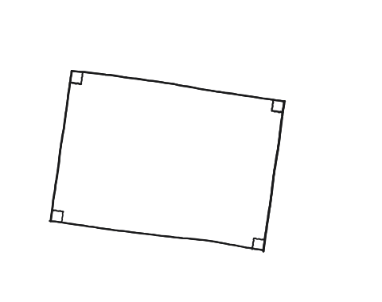
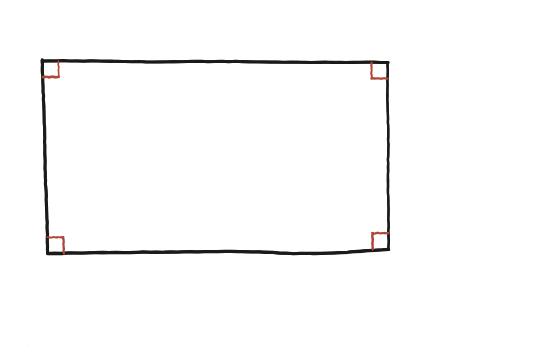

Si tots els angles d'un polígon simple tancat de quatre costats són rectes, quina condició han de complir les longituds dels costats?

Només una dada de partida
Aquí no se sap, d'entrada, que els costats oposats siguin paral·lels ni iguals —només que els quatre angles interiors fan 90° cadascun. Cal esbrinar quina condició sobre els costats es dedueix, necessàriament, d'aquesta única dada sobre els angles.
Partir-lo amb una diagonal, com a q11
Traçant una diagonal, el quadrilàter queda dividit en dos triangles. Amb els angles rectes donats als dos vèrtexs originals de cadascun (i la suma d'angles de cada triangle, sempre 180°), es poden trobar els altres dos angles de cada triangle en funció de la diagonal i dels angles rectes coneguts.

Dels angles rectes al paral·lelisme
Amb els quatre angles fixats a 90°, els dos costats que arriben a cada vèrtex hi arriben perpendiculars. Dues rectes que són totes dues perpendiculars a una tercera recta són, per força, paral·leles entre elles —aplicant-ho als costats oposats del quadrilàter (que comparteixen la perpendicularitat amb un mateix costat comú), costat oposat és paral·lel a costat oposat.
Un cop hi ha paral·lelisme, tanca-ho com a q11
Amb els dos parells de costats oposats ja demostrats paral·lels, la figura és, per definició, un paral·lelogram —i s'és exactament en la mateixa situació que a la Qüestió 11: en un paral·lelogram, els costats oposats són sempre iguals. La condició final sobre les longituds és, doncs, costats oposats iguals dos a dos —el mateix que ja se sabia d'un rectangle, però ara deduït únicament a partir dels angles, sense donar el paral·lelisme per fet des del principi.
Si els quatre angles d'un quadrilàter són tots de 90°, els costats oposats han de ser iguals dos a dos: és un rectangle. Els angles rectes force el paral·lelisme (dues rectes perpendiculars a una tercera són paral·leles), i un cop hi ha paral·lelisme, la igualtat de costats oposats ve directament de la Qüestió 11. És el recíproc exacte de q11 (que partia del paral·lelisme) i de q12 (que partia de les diagonals iguals).
Comprovació
Construint un quadrilàter amb els quatre angles a 90° i triant lliurement dos costats consecutius (per exemple 5 i 8), els altres dos costats no es poden triar lliurement: han de sortir també 5 i 8. Provant de forçar-ne un de diferent (5, 8, 5, 9) és impossible tancar la figura amb els quatre angles rectes.